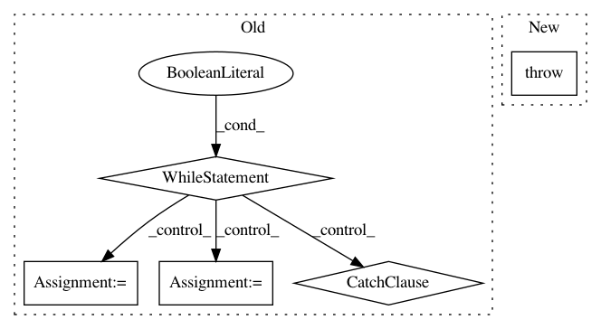

845a5692cd16a152572e8818dbdecfd5d7a7764a,ann_benchmarks/runner.py,,run_docker,#Any#Any#Any#Any#Any#Any#,136
Before Change
mem_limit=mem_limit,
detach=True)
t = t0 = datetime.datetime.now()
while True:
exit_code = None
try:
exit_code = container.wait(timeout=10)
except (requests.exceptions.ReadTimeout, requests.exceptions.ConnectionError) as e:
pass
except:
// If something unexpected happened, just kill the container
container.kill()
// Print any logs since last timestamp
logs = container.logs(since=t)
sys.stdout.buffer.write(logs)
sys.stdout.buffer.flush()
t = datetime.datetime.now()
// Exit if exit code
if exit_code == 0:
return
elif exit_code is not None:
raise Exception("Child process raised exception %d" % exit_code)
// Break if we"ve spent too much time
if (t - t0).total_seconds() > timeout:
raise Exception("Child process time limit %fs exceeded" % timeout)
After Change
exit_code = container.wait(timeout=timeout)
except:
container.kill()
raise
// Exit if exit code
if exit_code == 0:
return
In pattern: SUPERPATTERN
Frequency: 3
Non-data size: 5
Instances
Project Name: erikbern/ann-benchmarks
Commit Name: 845a5692cd16a152572e8818dbdecfd5d7a7764a
Time: 2017-12-09
Author: mail@erikbern.com
File Name: ann_benchmarks/runner.py
Class Name:
Method Name: run_docker
Project Name: Bihaqo/t3f
Commit Name: 4257bd12136ce3a135a4fab4ad0667dfccf8368d
Time: 2017-02-03
Author: novikov@bayesgroup.ru
File Name: variables.py
Class Name:
Method Name: get_tt_variable
Project Name: chainer/chainercv
Commit Name: babf7c9f50282143ab8efee96a587bf5cb74123f
Time: 2017-06-01
Author: yuyuniitani@gmail.com
File Name: chainercv/evaluations/eval_semantic_segmentation_iou.py
Class Name:
Method Name: calc_semantic_segmentation_confusion